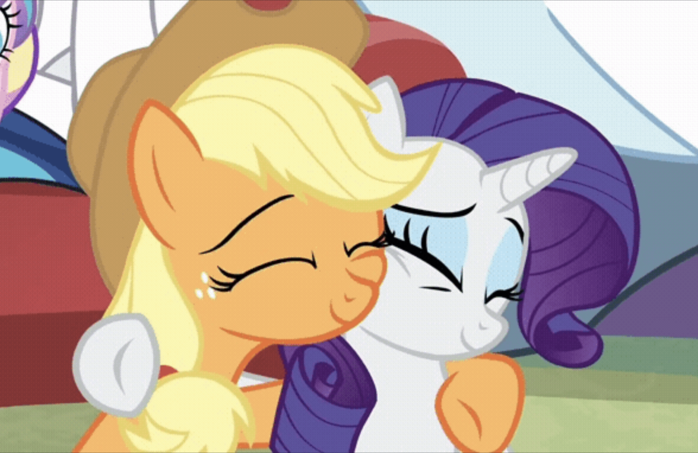

Art 74 - Caitlyn Vu
Glitch Art
I chose to work with Rarity and Apple Jack from My Little Pony to show how much romantic chemistry they have. Data bending was more challenging since there wasn't as much control like data moshing. Specifically with data moshing, one is able to grasp the pattern within Audacity and see which effects create a certain output. Data bending seems purely random since one is simply taking code and pasting it elsewhere. The images are glitched to show the queerness of their relationship specifically with color. Click on the images to view more information on each glitch.
Data Moshing

This is the first glitch created for the project. Audacity was used in order to data mosh the image. I enjoyed how this image came to be since it creates a chaotic atmosphere, which is related to a character name Discord. The characters are still recognizable and the data moshing gives the image a different vibe. Below is the original image.


This is the second glitch created for the project, also using Audacity to data mosh the image. Within both works, I tried to utilize the rainbow in hopes to represent their romantic connection. This one shows more than the first. Regardless, both have elements of all sorts of colors. Below is the original image.
